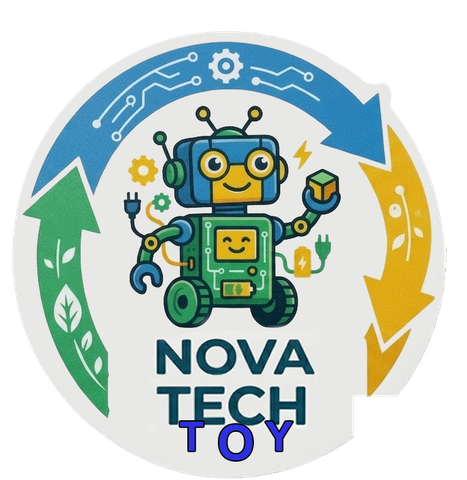

Inclusão pelo Brincar
Projetar brinquedos sob a ótica do Design Universal, garantindo que crianças autistas e neurotípicas compartilhem a mesma experiência com igualdade.
Economia circular & tecnologia
A Nova Tech Toy transforma resíduos eletrônicos em experiências que conectam tecnologia, sustentabilidade, aprendizado e inclusão.

Sobre a Nova Tech Toy
Aquilo que já foi considerado descarte pode se transformar em uma nova possibilidade. A Nova Tech Toy nasce da ideia de ressignificar resíduos eletrônicos e transformá-los em experiências que estimulam o aprendizado, a criatividade, a interação e a inclusão.
Nosso propósito
Nosso propósito é transformar resíduos eletrônicos em ferramentas de inclusão, aprendizado e diversão, criando brinquedos sustentáveis e sensoriais que conectam diferentes formas de brincar através de experiências universais.
Transformar resíduos eletrônicos em ferramentas de inclusão, aprendizado e diversão, criando brinquedos sustentáveis e sensoriais que conectam todas as crianças — neurotípicas e neurodivergentes — através do brincar universal.
Ser a marca referência em brinquedos inclusivos e economia circular na América Latina, demonstrando que a tecnologia descartada pode se transformar em um futuro mais acolhedor, consciente e acessível para a infância.
Nossos valores
Projetar brinquedos sob a ótica do Design Universal, garantindo que crianças autistas e neurotípicas compartilhem a mesma experiência com igualdade.
Repensar o destino dos resíduos eletrônicos e transformar descarte em oportunidade.
Explorar novas possibilidades através da tecnologia, criatividade e design.
Transformar experiências de brincar em oportunidades de descoberta.
Criar experiências que considerem diferentes formas de interação e percepção.
Como funciona
Materiais eletrônicos recebem uma nova oportunidade.
Componentes são analisados e separados.
Tecnologia e criatividade dão um novo significado aos materiais.
O resultado se transforma em uma experiência pensada para estimular descoberta, interação e aprendizado.
Impacto
* Números ilustrativos, atualizados conforme o avanço da iniciativa.
Quando tecnologia, criatividade e propósito se encontram, aquilo que parecia ter chegado ao fim pode se tornar o começo de algo novo.
Conheça a Nova Tech Toy e acompanhe como tecnologia e sustentabilidade podem construir novas formas de aprender, brincar e transformar.
Conheça nossa história